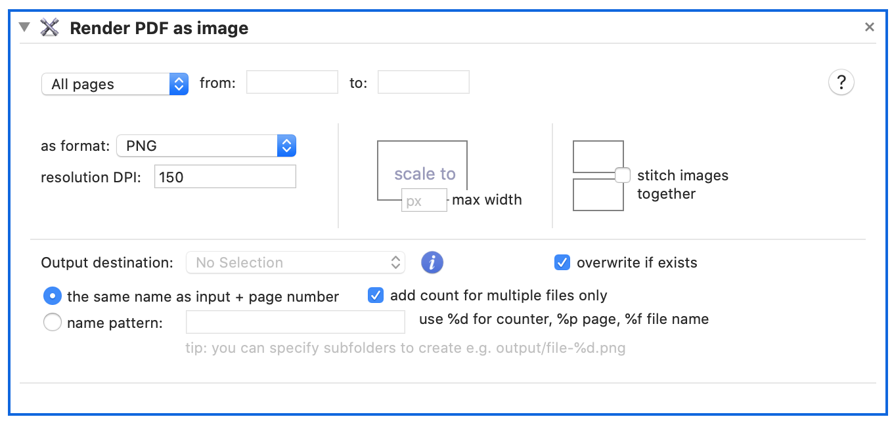

Render PDF as image. You can select image format to be PDF, TIFF or JPEG and specify output resolution in DPI.

There are two ways how you can crop the image. Either by specifying final with and height or by setting top and bottom offsets. All measurements are to be set in PDF points (not pixels). The easiest way to get these measurements is to use Preview’s inspector tool.
Scale is specified as maximal width of resulting image.
If PDF contains multiple pages, each page will be rendered into separate image file. You can stitch all pages together to create one image file.
Saving TIF as CMYK or other color space
This action will write out an image with RGB colors. You can combine it with “Apply ColorSync Profile to Images” action to convert it to number of other color spaces.

The action contains many different profiles, including:
- CMYK
- Web Safe Colors
- Display and printer profiles
- Ability to increase and decrease lightness